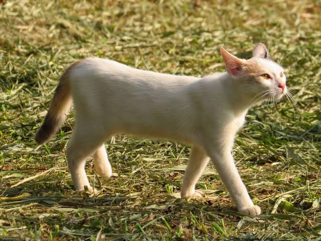

PERRO
Max
Edad: 2 años
Personalidad: Juguetón y cariñoso.
Busca una familia que disfrute los paseos y los juegos.
Apoya a las mascotasCada mascota tiene una historia y muchas ganas de compartir su amor.
Edad: 2 años
Personalidad: Juguetón y cariñoso.
Busca una familia que disfrute los paseos y los juegos.
Apoya a las mascotas
Edad: 1 año
Personalidad: Tranquila y amigable.
Ideal para una familia que pueda darle tiempo y cariño.
Apoya a las mascotas
Edad: 6 meses
Personalidad: Curioso y juguetón.
Necesita un hogar seguro donde pueda crecer feliz.
Apoya a las mascotas